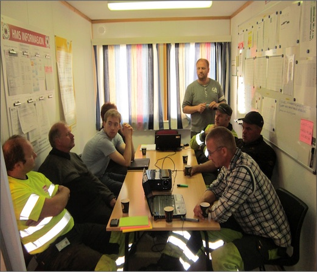
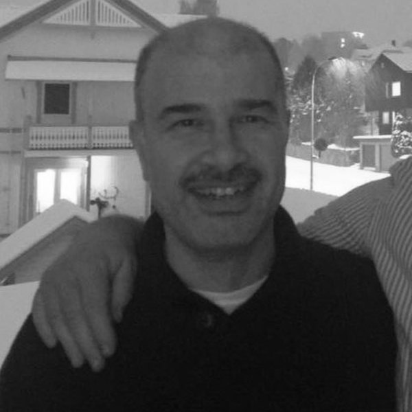

Sensei Mentorship
Leaders learn faster through challenge and dialogue with an experienced sensei mentor.
Learn moreSensei mentoring, hands-on training and e-learning in Lean and systems thinking, for leaders and teams in businesses and municipalities.
Organisations that want to survive complex, rapid change need to become real learning organisations: systems of people who master the art of learning together. That’s what we help leaders build.
Meet the team →
Leaders learn faster through challenge and dialogue with an experienced sensei mentor.
Learn more
Site training linked to the practical challenges of developing a learning and improvement culture, with Gemba learning trips.
Learn more
A change of scenery opens the mind: bring your team to our countryside retreat in Piemonte, Italy.
Learn more
E-books, e-courses and webinars that are affordable, available 24/7 and can be tailored to your organisation.
Learn moreCoaching and a video library to build a culture where everyone learns and improves every day.
Learn moreBook a free consultation and we will help you find the right path.
Get in touch
Bjarne Berg Wig's guide to using the Obeya room to see the whole system, align leaders and learn faster together. Chapter resources, articles and templates are free online.
Chapter notes, templates, videos and downloads.
Chapter resources, articles and templates.
View resources →
Resources for chapters 1–12.
View resources →
Course material and templates.
View resources →
Quality management for the 21st century.
View resources →ILO evolved from TQM Center Norway. Our two resident experts help employees and leaders become systems thinkers through mentorship, on-site training and e-learning.

More than 30 years in quality management and Lean, including as Quality and Innovation Manager at Hydro Agri Europe (now Yara). He has written 7 professional books and is a founder of LOS Norge, the Society for Learning Organizations in Norway.
Read full bio →
Specialist in learning culture transformation. Samer works alongside Bjarne on ILO's mentorship, training and seminars, helping organisations build a culture where everyone learns and improves.
Read full bio →Trusted by leading Norwegian organisations
Tell us where you are today, and we will suggest the next step for your team.
or contact us directly: gabi@learnorg.global · +47 48 28 70 00